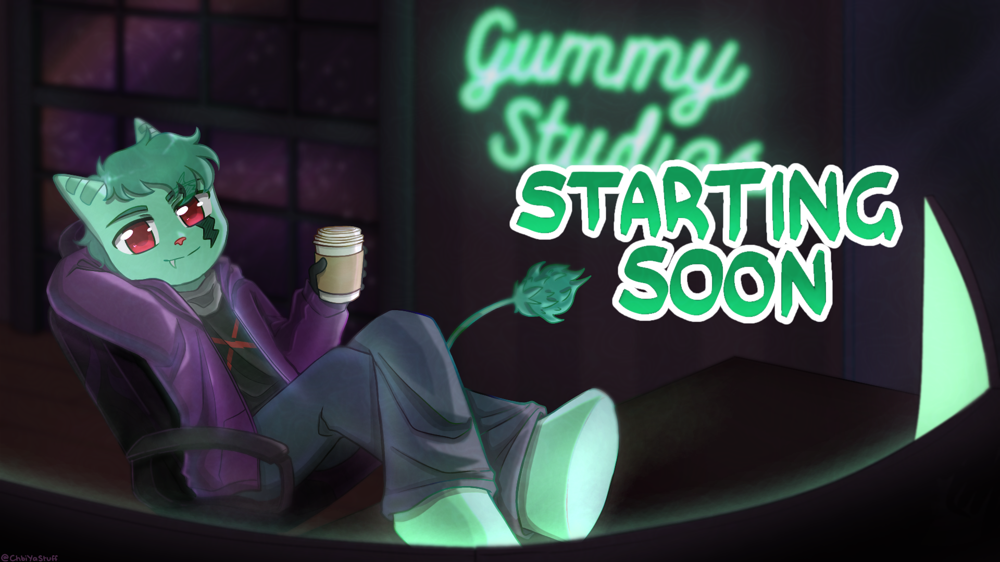

Hey im the creator of Gummy Bud the boss man of Gummy Studio's and i am a hobby enthusiast i mainly like gunpla as my artsy hobby i enjoy playing bass. I made Gummy Bud as more of a mascot for the Studio rather than something that reprosents me but it has become more of me over time but gummy bud is still a mascot in my mind. I just look to make bud's *pun intended* and have fun with the community and make a safe space for people to hang out and be themselves. My hope is to build a real film studio one day!
Gummy Bud is a lombax (lombax are a species from the ratchet and clank games) and like all lombaxs out there he is a fixer. In most dimensions lombaxs fix space ships and weapons but Gummy Bud comes from a dimension where everyone builds mechs 59 feet tall. Gummy Buds goal is to assemble the most top of the line mechs in history.